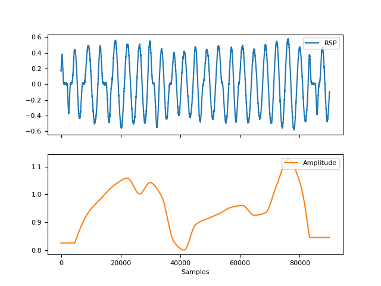
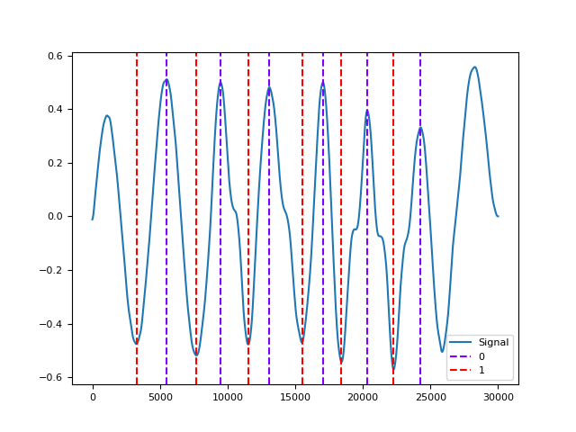

RSP
Contents
RSP#
Main#
rsp_amplitude()#
- rsp_amplitude(rsp_cleaned, peaks, troughs=None, interpolation_method='monotone_cubic')#
Compute respiratory amplitude
Compute respiratory amplitude given the raw respiration signal and its extrema.
- Parameters
rsp_cleaned (Union[list, np.array, pd.Series]) – The cleaned respiration channel as returned by rsp_clean().
peaks (list or array or DataFrame or Series or dict) – The samples at which the respiration peaks (exhalation onsets) occur. If a dict or a DataFrame is passed, it is assumed that these containers were obtained with rsp_findpeaks().
troughs (list or array or DataFrame or Series or dict) – The samples at which the respiration troughs (inhalation onsets) occur. If a dict or a is passed, it is assumed that these containers were obtained with rsp_findpeaks().
interpolation_method (str) – Method used to interpolate the amplitude between peaks. See signal_interpolate(). ‘monotone_cubic’ is chosen as the default interpolation method since it ensures monotone interpolation between data point (i.e., it prevents physiologically implausible “overshoots” or “undershoots” in the y-direction). In contrast, the widely used cubic spline ‘interpolation does not ensure monotonicity.
- Returns
array – A vector containing the respiratory amplitude.
See also
rsp_clean,rsp_peaks,signal_rate,rsp_process,rsp_plotExamples
In [1]: import neurokit2 as nk In [2]: import pandas as pd In [3]: rsp = nk.rsp_simulate(duration=90, respiratory_rate=15) In [4]: cleaned = nk.rsp_clean(rsp, sampling_rate=1000) In [5]: peak_signals, info = nk.rsp_peaks(cleaned) In [6]: amplitude = nk.rsp_amplitude(cleaned, peak_signals) In [7]: fig = nk.signal_plot(pd.DataFrame({"RSP": rsp, "Amplitude": amplitude}), subplots=True)
{kind=link}
rsp_analyze()#
- rsp_analyze(data, sampling_rate=1000, method='auto')#
RSP Analysis
Performs RSP analysis on either epochs (event-related analysis) or on longer periods of data such as resting-state data.
- Parameters
data (dict or DataFrame) – A dictionary of epochs, containing one DataFrame per epoch, usually obtained via epochs_create(), or a DataFrame containing all epochs, usually obtained via epochs_to_df(). Can also take a DataFrame of processed signals from a longer period of data, typically generated by rsp_process() or bio_process(). Can also take a dict containing sets of separate periods of data.
sampling_rate (int) – The sampling frequency of the signal (in Hz, i.e., samples/second). Defaults to 1000Hz.
method (str) – Can be one of ‘event-related’ for event-related analysis on epochs, or ‘interval-related’ for analysis on longer periods of data. Defaults to ‘auto’ where the right method will be chosen based on the mean duration of the data (‘event-related’ for duration under 10s).
- Returns
DataFrame – A dataframe containing the analyzed RSP features. If event-related analysis is conducted, each epoch is indicated by the Label column. See rsp_eventrelated() and rsp_intervalrelated() docstrings for details.
See also
bio_process,rsp_process,epochs_create,rsp_eventrelated,rsp_intervalrelatedExamples
In [1]: import neurokit2 as nk # Example 1: Download the data for event-related analysis In [2]: data = nk.data("bio_eventrelated_100hz") # Process the data for event-related analysis In [3]: df, info = nk.bio_process(rsp=data["RSP"], sampling_rate=100) In [4]: events = nk.events_find(data["Photosensor"], threshold_keep='below', ...: event_conditions=["Negative", "Neutral", "Neutral", "Negative"]) ...: In [5]: epochs = nk.epochs_create(df, events, sampling_rate=100, epochs_start=-0.1, epochs_end=1.9) # Analyze In [6]: nk.rsp_analyze(epochs, sampling_rate=100) Out[6]: Label Condition ... RSP_Phase RSP_Phase_Completion 1 1 Negative ... 0.0 0.641256 2 2 Neutral ... 0.0 0.462312 3 3 Neutral ... 0.0 0.752747 4 4 Negative ... 1.0 0.746667 [4 rows x 20 columns] # Example 2: Download the resting-state data In [7]: data = nk.data("bio_resting_5min_100hz") # Process the data In [8]: df, info = nk.rsp_process(data["RSP"], sampling_rate=100) # Analyze In [9]: nk.rsp_analyze(df, sampling_rate=100) Out[9]: RSP_Rate_Mean ... RRV_DFA_alpha2_DimMean 0 15.860331 ... 0.356496 [1 rows x 30 columns]
rsp_clean()#
- rsp_clean(rsp_signal, sampling_rate=1000, method='khodadad2018')#
Preprocess a respiration (RSP) signal
Clean a respiration signal using different sets of parameters, such as ‘khodadad2018’ (linear detrending followed by a fifth order 2Hz low-pass IIR Butterworth filter) or `BioSPPy <https:// github.com/PIA-Group/BioSPPy/blob/master/biosppy/signals/resp.py>`_(second order0.1 - 0.35 Hz bandpass Butterworth filter followed by a constant detrending).
- Parameters
rsp_signal (Union[list, np.array, pd.Series]) – The raw respiration channel (as measured, for instance, by a respiration belt).
sampling_rate (int) – The sampling frequency of rsp_signal (in Hz, i.e., samples/second).
method (str) – The processing pipeline to apply. Can be one of “khodadad2018” (default) or “biosppy”.
- Returns
array – Vector containing the cleaned respiratory signal.
See also
rsp_findpeaks,signal_rate,rsp_amplitude,rsp_process,rsp_plotExamples
In [1]: import pandas as pd In [2]: import neurokit2 as nk In [3]: rsp = nk.rsp_simulate(duration=30, sampling_rate=50, noise=0.01) In [4]: signals = pd.DataFrame({ "RSP_Raw": rsp, ...: "RSP_Khodadad2018": nk.rsp_clean(rsp, sampling_rate=50, method="khodadad2018"), ...: "RSP_BioSPPy": nk.rsp_clean(rsp, sampling_rate=50, method="biosppy")}) ...: In [5]: fig = signals.plot()

References
rsp_findpeaks()#
- rsp_findpeaks(rsp_cleaned, sampling_rate=1000, method='khodadad2018', amplitude_min=0.3)#
Extract extrema in a respiration (RSP) signal
Low-level function used by rsp_peaks() to identify inhalation and exhalation onsets (troughs and peaks respectively) in a preprocessed respiration signal using different sets of parameters. See rsp_peaks() for details.
- Parameters
rsp_cleaned (Union[list, np.array, pd.Series]) – The cleaned respiration channel as returned by rsp_clean().
sampling_rate (int) – The sampling frequency of ‘rsp_cleaned’ (in Hz, i.e., samples/second).
method (str) – The processing pipeline to apply. Can be one of “khodadad2018” (default) or “biosppy”.
amplitude_min (float) – Only applies if method is “khodadad2018”. Extrema that have a vertical distance smaller than(outlier_threshold * average vertical distance) to any direct neighbour are removed as false positive outliers. I.e., outlier_threshold should be a float with positive sign (the default is 0.3). Larger values of outlier_threshold correspond to more conservative thresholds (i.e., more extrema removed as outliers).
- Returns
info (dict) – A dictionary containing additional information, in this case the samples at which inhalation onsets and exhalation onsets occur, accessible with the keys “RSP_Troughs” and “RSP_Peaks”, respectively.
See also
rsp_clean,rsp_fixpeaks,rsp_peaks,signal_rate,rsp_amplitude,rsp_process,rsp_plotExamples
In [1]: import neurokit2 as nk In [2]: rsp = nk.rsp_simulate(duration=30, respiratory_rate=15) In [3]: cleaned = nk.rsp_clean(rsp, sampling_rate=1000) In [4]: info = nk.rsp_findpeaks(cleaned) In [5]: fig = nk.events_plot([info["RSP_Peaks"], info["RSP_Troughs"]], cleaned)
{kind=link}
rsp_fixpeaks()#
- rsp_fixpeaks(peaks, troughs=None)#
Correct RSP peaks
Low-level function used by rsp_peaks() to correct the peaks found by rsp_findpeaks(). Doesn’t do anything for now for RSP. See rsp_peaks() for details.
- Parameters
peaks (list or array or DataFrame or Series or dict) – The samples at which respiration peaks (exhalation onsets) occur. If a dict or a DataFrame is passed, it is assumed that these containers were obtained with rsp_findpeaks().
troughs (list or array or DataFrame or Series or dict) – The samples at which respiration troughs (inhalation onsets) occur. If a dict or a DataFrame is passed, it is assumed that these containers were obtained with rsp_findpeak().
- Returns
info (dict) – A dictionary containing additional information, in this case the samples at which inhalation onsets and exhalation onsets occur, accessible with the keys “RSP_Troughs” and “RSP_Peaks”, respectively.
See also
rsp_clean,rsp_findpeaks,rsp_peaks,rsp_amplitude,rsp_process,rsp_plotExamples
In [1]: import neurokit2 as nk In [2]: rsp = nk.rsp_simulate(duration=30, respiratory_rate=15) In [3]: cleaned = nk.rsp_clean(rsp, sampling_rate=1000) In [4]: info = nk.rsp_findpeaks(cleaned) In [5]: info = nk.rsp_fixpeaks(info) In [6]: fig = nk.events_plot([info["RSP_Peaks"], info["RSP_Troughs"]], cleaned)